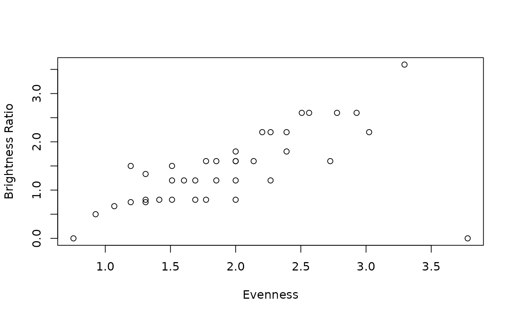

The brightness ratio
eps.RdSection 3.3 of "Modal Color Theory" describes a "brightness ratio" which characterizes the modes of a scale in terms of how well "sum brightness" acts as a proxy for "voice-leading brightness." Scales with a brightness ratio less than 1 are pretty well behaved from this perspective, while ones with a brightness ratio greater than 1 are poorly behaved. When the brightness ratio is 0, sum brightness and voice-leading brightness give exactly the same results. (This can happen for sets on two extremes: those like the diatonic scale which are well formed and those like the Weitzmann scales, which differ from "white" in only one scale degree.)
I wish I had come up with a more descriptive name than "brightness ratio" for this
property, because it's not really a ratio of brightness in the sense you might expect (i.e.
"this scale is 20% bright"). Rather, it's a ratio of two brightness-related properties,
delta and eps. "Modal Color Theory" (p. 20) offers definitions of these. Delta is
"the largest sum difference between (voice-leading) incomparable modes," with value 0 by
definition if all of the modes are comparable. ("This, in a sense, is a measure of how badly
voice-leading brightness breaks down from the perspective of sum brightness.") Epsilon
"represents the smallest sum difference between non-identical but comparable modes."
This is harder to give an intuitive gloss on, but my attempt in "MCT" was "Essentially,
epsilon measures the finest distinction that voice-leading brightness is capable of
parsing."
The brightness ratio (ratio) itself is simply delta divided by epsilon.
Usage
eps(set, edo = 12, rounder = 10)
delta(set, edo = 12, rounder = 10)
ratio(set, edo = 12, rounder = 10)Examples
harmonic_minor <- c(0,2,3,5,7,8,11)
hypersaturated_harmonic_minor <- saturate(2, harmonic_minor)
c(delta(harmonic_minor), eps(harmonic_minor))
#> [1] 2 3
c(delta(hypersaturated_harmonic_minor), eps(hypersaturated_harmonic_minor))
#> [1] 4 6
# Delta and epsilon depend on the precise scale, but ratio() is constant on a hue
ratio(harmonic_minor)
#> [1] 0.6666667
ratio(hypersaturated_harmonic_minor)
#> [1] 0.6666667
#### Sort all 12tet heptachords by brightness ratio
heptas12 <- unique(apply(combn(12,7),2,primeform),MARGIN=2)
hepta_ratios <- apply(heptas12, 2, ratio)
sorted_heptas <- heptas12[,order(hepta_ratios)]
colnames(sorted_heptas) <- apply(sorted_heptas,2,fortenum)
sorted_heptas
#> 7-1 7-35 7-34 7-32 7-30 7-22 7-19 7-17 7-15 7-29 7-28 7-20 7-12 7-38 7-27
#> [1,] 0 0 0 0 0 0 0 0 0 0 0 0 0 0 0
#> [2,] 1 1 1 1 1 1 1 1 1 1 1 1 1 1 1
#> [3,] 2 3 3 3 2 2 2 2 2 2 3 2 2 2 2
#> [4,] 3 5 4 4 4 5 3 4 4 4 5 5 3 4 4
#> [5,] 4 6 6 6 6 6 6 5 6 6 6 6 4 5 5
#> [6,] 5 8 8 8 8 8 7 6 7 7 7 7 7 7 7
#> [7,] 6 10 10 9 9 9 9 9 8 9 9 9 9 8 9
#> 7-25 7-26 7-37 7-31 7-21 7-33 7-5 7-16 7-14 7-24 7-23 7-18 7-6 7-7 7-3
#> [1,] 0 0 0 0 0 0 0 0 0 0 0 0 0 0 0
#> [2,] 2 1 1 1 1 1 1 1 1 1 2 1 1 1 1
#> [3,] 3 3 3 3 2 2 2 2 2 2 3 4 2 2 2
#> [4,] 4 4 4 4 4 4 3 3 3 3 4 5 3 3 3
#> [5,] 6 5 5 6 5 6 5 5 5 5 5 6 4 6 4
#> [6,] 7 7 7 7 8 8 6 6 7 7 7 7 7 7 5
#> [7,] 9 9 8 9 9 10 7 9 8 9 9 9 8 8 8
#> 7-36 7-11 7-13 7-4 7-9 7-10 7-8 7-2
#> [1,] 0 0 0 0 0 0 0 0
#> [2,] 1 1 1 1 1 1 2 1
#> [3,] 2 3 2 2 2 2 3 2
#> [4,] 3 4 4 3 3 3 4 3
#> [5,] 5 5 5 4 4 4 5 4
#> [6,] 6 6 6 6 6 6 6 5
#> [7,] 8 8 8 7 8 9 8 7
#### Compare evenness to ratio for 12tet hetpachords
plot(apply(heptas12, 2, evenness), hepta_ratios, xlab="Evenness", ylab="Brightness Ratio")
